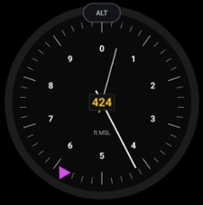
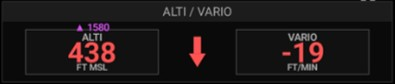

Possibilités
- Affiche l'altitude GPS
- Saisie d'une altitude à suivre, matérialisée par un curseur magenta
- NUMALT combine Altitude + Vario en 2 cases encadrées, chacune comportant une valeur colorée selon la tendance (vert en montée, rouge en descente). La bordure des cases reste gris neutre, et une flèche de tendance est affichée entre les deux cases pour indiquer une montée ou une descente
- Unité pieds (ft) ou mètres (m) selon Réglages ▸ Cockpits : la graduation du cadran et la valeur numérique suivent l'unité choisie (elles restent cohérentes)
- Pastille de titre affichée en haut du cadran (masquable via Options ▸ "Masquer le titre" dans la case du cockpit)
Gestes supportés
Appui long : Saisie de l'altitude à suivre
ANLALT

NUMALT
